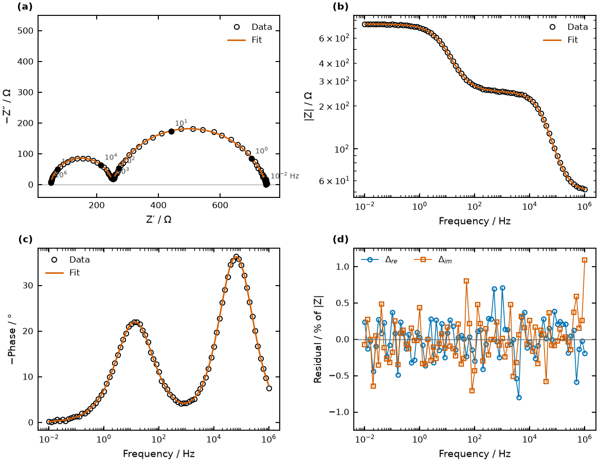
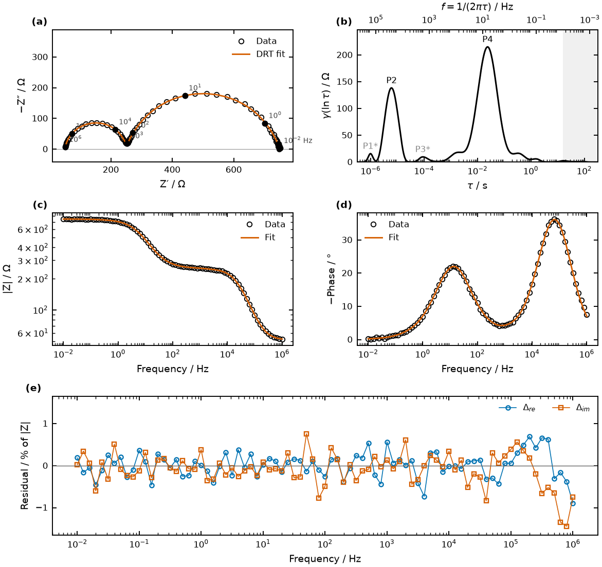

Impedance analysis that stays on your computer
Fit any equivalent circuit, compute the distribution of relaxation times, and get the conductivity of your sample with figures ready for a paper.
EIS Studio reads files straight from Gamry, BioLogic, ZView, VersaStudio, Autolab and other potentiostats, checks them with a Kramers–Kronig test, and opens in your web browser. It is free and open source.
Windows, macOS and Linux. One command; no Python installation needed.
A full analysis in 90 seconds
Upload a BioLogic file, check it, fit a circuit, compute the DRT and download the results. The recording has captions and no sound.
What you take away
Every result downloads as CSV tables, plus figures in PNG, TIFF, PDF or SVG at journal column widths. Text stays editable in Illustrator or Inkscape. A settings file records the circuit, parameters and library versions, so a figure can be regenerated exactly.


What it does
- Reads your files
- Gamry .DTA, ZView .z, BioLogic .mpt (including decimal-comma exports and multi-cycle files), VersaStudio, Parstat, Autolab and CH Instruments exports, and any CSV, text or Excel table. It reports how it read the columns and the sign of Z″, and you can override either.
- Checks the data
- A Lin-KK Kramers–Kronig test before any fitting, because drift or non-linearity makes every fitted parameter meaningless.
- Fits circuits
- Any circuit built from R, C, L, CPE, Warburg, Gerischer and transmission-line elements. You can edit starting values, fix parameters and set bounds. It refits from several starting points and warns when a parameter is not determined by your data, for example when an arc lies outside the measured frequency range.
- Computes the DRT
- Regularised DRT with every pyDRTtools option: six ways to choose λ, a Bayesian credible band, and inductance handling. Peaks are located and integrated into resistances and time constants, and likely artefact peaks are flagged.
- Gives conductivity
- Enter thickness and diameter (or area). σ = L/(R·A), with the uncertainty propagated from the fit and from your measurement of the sample.
Your data stays with you
EIS Studio runs on your own computer and only listens to your own machine. Your spectra are never uploaded to a server, which matters for unpublished results and for data under confidentiality agreements.
Built on published methods
Circuit fitting uses impedance.py and the DRT uses pyDRTtools from the Ciucci group. If EIS Studio contributes to a paper, please cite those packages and the methods you used; the full reference list is on the methods page. To cite EIS Studio itself: Z. Warren, EIS Studio, version 0.1.0 (2026), https://github.com/zacharyslate/eis-studio.